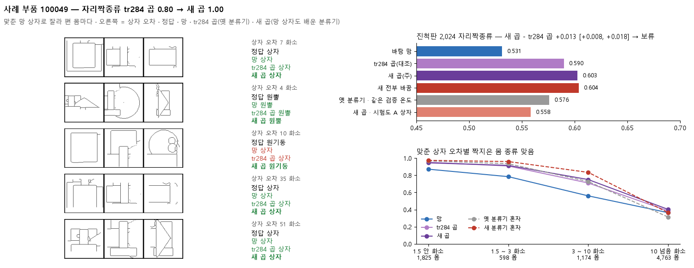

실험 m2_tr0285_h036_망상자배움
목표 G1.2 view 모음 → 파츠별 CAD code(CadQuery · 그 전 「3 면도 → 파츠별 CAD」 · 지금 M2 는 위 · 앞 · 옆 고정 세 장만 받음 → 아무 각도 N 장으로 바꿀 것 · 11-20) · G1 첫 제품 — 피규어 · 메카 사진 여러 장 + 치수 → 숨은선 3 면도 + 파츠별 CAD · G0 임의의 이미지 → CAD 코드 · 빌린 가정 3: 생성기기하 · 정답3D · 정사영 · 갚는 계획: 탐색 · 생성기 부품 · 고정 시험지 2,024 · 학습 부품 망 상자는 맞추기 없음(망 숫자 그대로) — 오르면 학습 상자도 맞춘 상자로(맞추기 부품마다 약 5 초) · 상자 오차 줄이기와 붙임 → 흐린 view · m1 view 로 버팀(Sc) · 목표 시험지 값: 안 잼 (!)
몸 분류기를 정답 상자로 자른 몸에 더해 망 상자로 자른 몸(학습 부품에 망이 실제로 낸 상자)으로도 배우면, tr284 곱 고르기의 진척판(처음 보는 몸 3 개 이상 2,024) 자리짝종류가 오르나?
판정 · H36 보류(+0.013 [+0.008, +0.018] · 지지선 0.02 아래 · 구간이 기각선 0.01 에 걸침) — 망 상자로 자른 그림도 배운 몸 분류기를 곱에 넣으면 진척판 자리짝종류 0.590 → 0.603 · 오름은 진짜(구간 아래 > 0)지만 작음 · 어긋난 상자 그림 읽기는 늘었고(검증 망 상자 0.49 → 0.67 · 시험 3 ~ 10 화소 0.73 → 0.83) 정답 상자 그림은 안 잃음(0.902 → 0.906) · 10 화소 넘게 어긋난 몸 57 % 는 0.40 에 막힘 · 다음: 상자 자체(망 밖에서 몸 묶기 · 상자 믿음을 곱에) · 개수 고치기
| 가설 | 주장 | 결과 | 근거 |
|---|---|---|---|
| H36 | 망 상자로 자른 그림도 배운 몸 분류기를 곱 고르기에 넣으면 정답 상자로만 배운 분류기보다 짝지은 몸을 더 맞힌다 | 보류 | tr284 곱 0.5897 → 새 곱 0.6027 · 묶음겹침 0.742 → 0.752 · 개수맞음 0.568 그대로(안 고침) · 같이: 새 전부 바꿈 0.604(+0.014 [0.005, 0.023]) · 옛 분류기를 같은 검증 온도(4.0)로 0.576(−0.014 [−0.018, −0.010]) · 시험도 A 상자 0.558(−0.031 [−0.039, −0.024]) · 몸 수별 tr284 → 새 곱: 3 개 611 0.749 → 0.759 · 4 개 508 0.608 → 0.624 · 5 개 432 0.512 → 0.524 · 6 개 473 0.435 → 0.450 · 검증 몸(번호 11000 ~) 분류기 혼자: 정답 상자 3,354 옛 0.902 → 새 0.906 · 망 상자 3,340 옛 0.488 → 새 0.667 · 맞춘 상자 오차별 짝지은 몸 8,360(망 · tr284 곱 · 새 곱 · 옛 혼자 · 새 혼자): 1.5 화소 안 1,825 0.871 · 0.952 · 0.945 · 0.968 · 0.974 / 1.5 ~ 3 598 0.784 · 0.908 · 0.915 · 0.935 · 0.960 / 3 ~ 10 1,174 0.560 · 0.710 · 0.750 · 0.727 · 0.834 / 10 넘음 4,763(57 %) 0.364 · 0.385 · 0.402 · 0.313 · 0.364 · 학습 20 바퀴 손실 0.044 · 학습 맞음 0.996 · 검증 맞음(두 출처) 0.787(4 바퀴 0.815 가 가장 높음) · 온도 새 3.0 · 옛 4.0 |
분석
한 줄로
물음: 몸 분류기를 정답 상자로 자른 몸에 더해, 망이 실제로 낸 상자로 자른 몸으로도 배우면 tr284 곱 고르기의 진척판 자리짝종류가 오르나?
답: 조금 오른다 — 보류. 진척판 2,024 부품에서 0.590 → 0.603(+0.013 [+0.008, +0.018])이다. 구간 아래가 0 위라 오른 것은 맞지만, 미리 정한 지지선 +0.02 에는 못 미쳤다. 10 화소 넘게 어긋난 몸은 새 분류기도 못 고친다.
왜 이 실험을 했나
tr284 에서 망 상자로 잘라 몸 분류기 확률과 망 확률을 곱하자 진척판이 0.531 → 0.590 으로 올랐다. 그런데 tr282 에서 본 대로, 분류기는 상자가 10 화소 넘게 어긋난 몸을 오히려 망쳤다. 정답 상자로 자른 그림만 배웠기 때문이라고 보았다. 상자 자체를 고치는 길(dd 의 선 주인 가리기 tr0283)은 기각돼 막혔다. 그래서 어긋난 상자 그림을 분류기에 보여 주기로 했다. 우리 목표는 도면 → CAD 코드이고, 이 자는 「몸마다 종류를 맞혔나」 를 본다.
바꾼 것 하나
몸 분류기가 배우는 그림만 바꿨다. tr282 의 정답 상자로 자른 몸 40,314 개에, 같은 학습 부품에 망이 낸 상자로 자른 몸 40,192 개를 이어 붙였다. 이름표는 망 종류가 아니라 자리로 짝지은 정답 종류다(망은 학습 부품 종류를 0.89 로 외우고 있다). 학습 부품 상자는 맞추기 없이 망 숫자 그대로 지었다(맞추기는 부품마다 약 5 초라 1 만 부품엔 못 씀). 같은 자로 재면 이 상자는 시험에서 쓰는 맞춘 상자만큼 어긋난다(10 화소 넘음 54 % 대 57 %). 분류기 망 · 학습 설정 · 시험 상자 · 고르기는 tr284 와 같고, 온도만 같은 길로 다시 골랐다(3.0). 카드는 학습 전에 커밋했다(af3b79c0).
결과

| 진척판 2,024 | 새 곱(주) | tr284 곱(대조) | 판정선 | 넘었나 |
|---|---|---|---|---|
| 자리짝종류 | 0.603 | 0.590 | 차 ≥ +0.02 · 아래 > 0 | 아니오(+0.013 [+0.008, +0.018] · 보류) |
| 종류 묶음 겹침 | 0.752 | 0.742 | — | — |
| 몸 개수 맞음 | 0.568 | 0.568 | 안 고침 | — |
자리짝종류 = 망이 낸 몸을 정답 몸과 자리로 짝지어 종류가 같은 비율(진척판 자). 같이 잰 팔: 새 분류기로 전부 바꿈 0.604 · 옛 분류기를 같은 검증 온도로 0.576 · 시험도 맞추기 없는 상자 0.558.
왜 이렇게 나왔나
확인한 것
- 새 분류기는 어긋난 상자 그림을 더 읽는다. 검증 부품(번호 11000 ~) 망 상자 몸에서 0.49 → 0.67, 시험의 3 ~ 10 화소 어긋난 몸에서 0.73 → 0.83 이다. 정답 상자 그림은 잃지 않았다(0.902 → 0.906).
- 그러나 상자가 10 화소 넘게 어긋난 몸이 짝지은 몸의 57 % 이고, 여기서는 망 · 곱 · 분류기 모두 0.31 ~ 0.40 이다. 남은 잃음의 큰 몫이 여기라 진척판은 조금만 올랐다.
- 오름은 온도 덕이 아니다. 옛 분류기를 같은 검증 온도(4.0)로 쓰면 0.576 으로 오히려 내려간다.
- 새 분류기 혼자 전부 바꿔도 0.604 로 곱과 같다. 망 확률을 곱해 얻던 덕이 사라졌다.
- 시험에서 맞추기를 빼면(망 숫자 상자) 0.558 이다. 실루엣 맞추기가 상자를 살린다.
짐작 (아직 확인 안 함)
- 10 화소 넘게 어긋난 상자는 다른 몸을 같이 자르거나 몸을 놓쳐, 잘린 그림에 답이 없을 것이다. 그렇다면 분류기로는 못 고치고 상자를 고쳐야 한다.
- 상자가 10 화소 안으로 맞는 몸에서는 분류기 혼자가 곱보다 낫다(3 ~ 10 화소 0.83 대 0.75). 시험 때 상자 믿음을 알 수 있으면 더 오를 것이다.
한계
- 상자 오차는 정답 상자로 잰 것이라 시험 때는 모른다.
- 학습 부품 망은 그 부품을 배운 망이고, 학습 상자는 맞추기를 안 했다.
- 몸 수가 두 배가 된 효과와 어긋난 상자를 본 효과를 가르지 않았다. 분류기 하나 · 씨 하나다.
- 검증 맞음은 4 바퀴 0.815 가 가장 높고 20 바퀴 0.787 로 내려갔다(외움). 카드대로 20 바퀴 무게를 썼다.
- 이 글의 상자 오차 자(lo · hi 여섯 값 중 가장 큰 차)는 dd tr281 의 자와 달라 tr282 의 「32 %」 와 바로 견주지 않는다.
배운 것과 다음
어긋난 상자 그림을 배우면 분류기는 덜 틀리지만, 10 화소 넘게 어긋난 57 % 는 그림에 답이 없어 진척판은 +0.013 만 오른다 — 막힘은 여전히 상자다.
- 상자 믿음 재기: 맞추기 실루엣 손실이나 분류기 확신처럼 시험 때 알 수 있는 값으로 맞는 상자를 가려, 맞으면 분류기 혼자 · 어긋나면 곱.
- 상자를 망 밖에서: dd 의 입력 선만으로 몸 묶기와 붙인다.
- 개수 고치기(상한 0.05).
실험 기록
- 카드(학습 전 커밋 af3b79c0 · H36_A_Fi · 식 · 판정식 · 진척 칸) · 망상자285.py(출력 · 상자 · 자르기 · 흐름 · 학습 · 온도 · 재기 · 그림) · 잼.json · 흐름.png · 결과.png · 원본 out/설명/캐드부품/모델285(학습출력.npz · 망상자.npy · 몸.npz 80,506 · 몸망.pt · 학습.json · 온도.json · 셈.npz)
- 돌리기 전 싼 확인: 학습 부품 앞 3,000 중 몸 2 개 이상 2,632 · 망 자리 오차 가운데 6.8 화소(진척판 11.8).
- 학습 부품 10,510 망 상자 못 지음 0 · 짝 없는 망 칸 371 은 뺌.
- Lean: 판정 못 채움(보류) · 하네스/lean/증명나무_tr0285.H36.png.